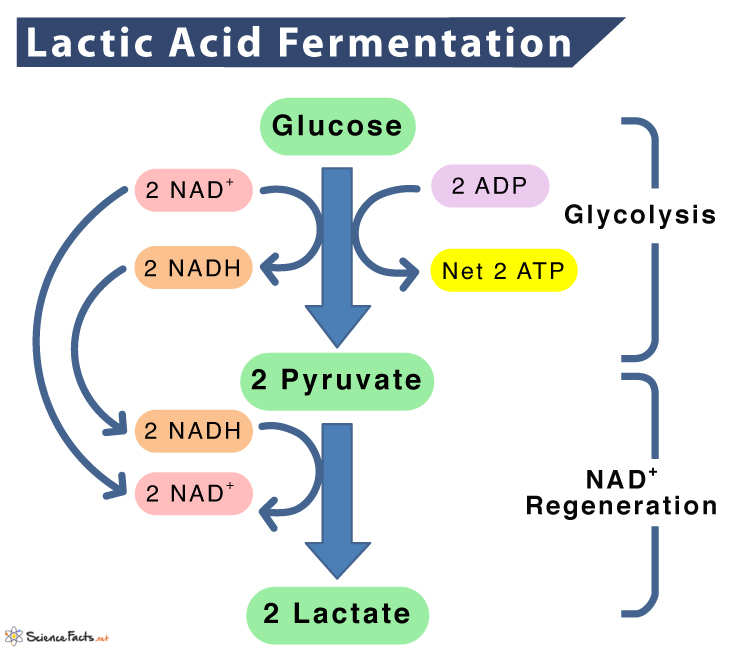
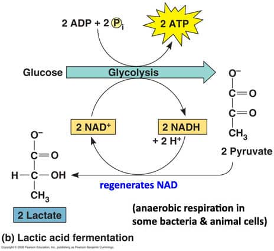
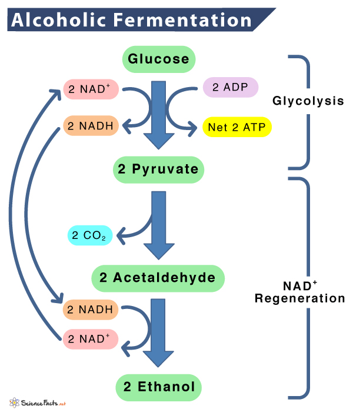

Fermentation
Chemical process by which molecules such as glucose are broken down anaerobically.
Can't enter Kreb's Cycle in anaerobic condition because the lack of oxygen makes pyruvate can't be oxidized.
Lactic Acid Fermentation
Carried out by some single celled organisms and animal muscle cells.
Pyruvate is reduced into a 3-Carbon Lactate and oxdizing NADH back to NAD+, so NAD can be used again for more glycolysis.


Lactic Acid to Human
In strenuous exercise, Aerobic Respiration can't keep up with the regeneration of NAD+, so lactic acid is produced to ensure glycolysis can continue.
The produced Lactic Acid can either
Reoxidized to Pyruvate when Oxygen is available
Transported to the Liver and convert to glucose and glycogen
Ethanol Fermentation
Yeast and some bacteria can function in both Aerobic and Anaerobic Conditions
When function Anaerobically, they convert Pyruvate to Ethanol and CO2 through Ethanol Fermentation, at the same time convert NADH to NAD+ to use in glycolysis.

Back